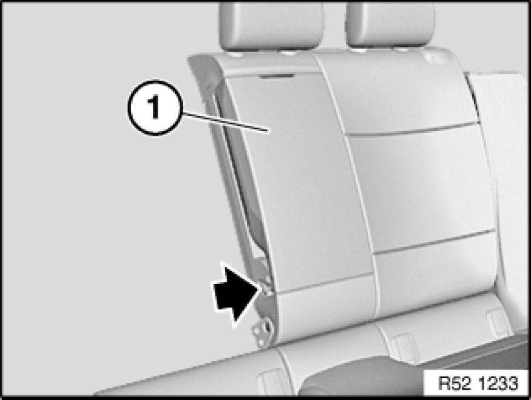
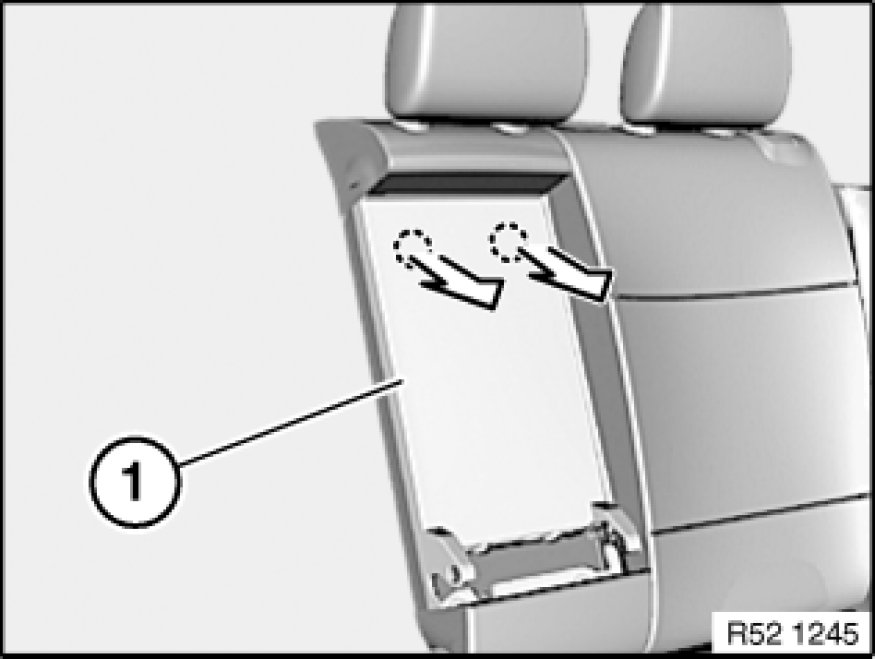
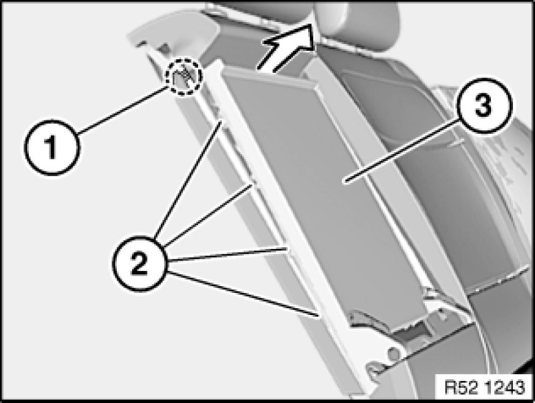
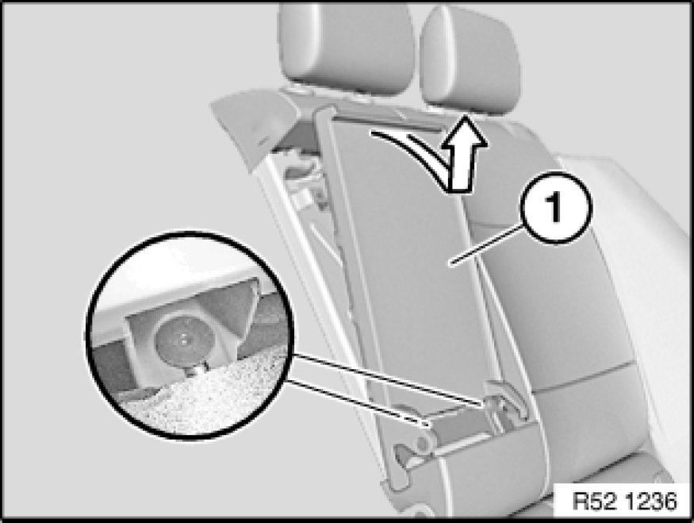
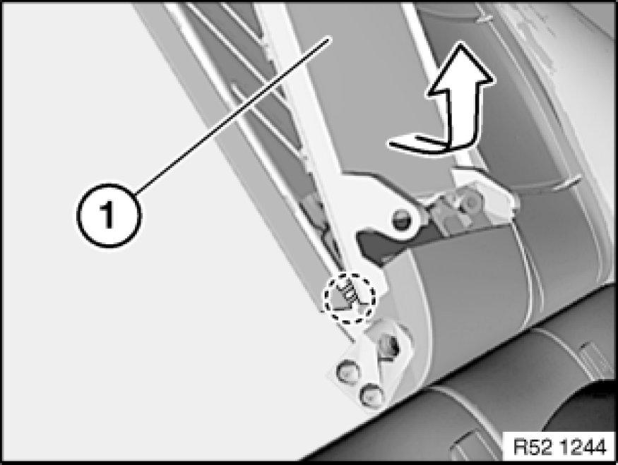
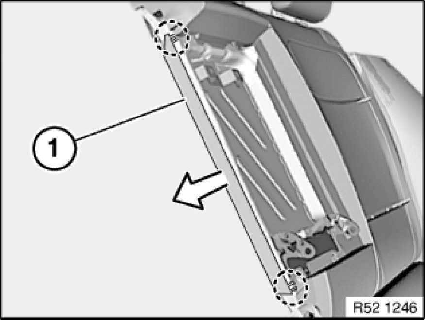

Removing and Installing Complete Centre Armrest for Rear Seat Backrest (Through-Loading)
52 26 030 - Removing and installing complete centre armrest for rear seat backrest (through-loading)

Unlock right backrest and tilt forwards.
Release screw.
Tightening torque 52 26 03AZ 52 26 Rear Seats (Through-Loading System).
Open centre armrest (1) and remove.

Version "without skibag" only
Important!
Risk of damage!
Pull cover trim (1) at top edges in stages and unclip.
Installation Note:
Clips may remain in the backrest frame and must be removed.
Replace faulty clips.

Note:
Forcefully pull top edge of cover trim (3) forwards and unclip upper retaining lug (1).
Unclip the four retaining lugs (2) in succession.

Pull cover trim (1) up and out of lower clips.
Installation Note:
Make sure cover trim (1) is correctly inserted into lower clips.
If necessary, replace faulty clips.

Note:
Twist cover trim (1) out of lower retaining lug during removal.
Cover trim (1) must be replaced if retaining lugs are faulty.

Remove cover strip (1) from backrest frame.
Note:
Cover strip (1) must be replaced if retaining lugs are faulty.